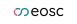

Storage¶
There are multiple types of resources you may need. This page is about finding a place to store big amounts of data: it shows a flowchart how to determine the storage resource you can use, followed by an overview of all resources.
Before you start, you should probably do a data classification and write a data management plan.
Further things to consider include things like keeping a backup, versioning, etc, but the flowchart below can be a useful start. We will happily discuss your needs and help you find something suitable.
flowchart TD
question_need_repo[Do you want to work actively on the data?]
question_need_repo --> |Yes| question_heavy_compute
question_need_repo --> |No| question_publish_archive
question_publish_archive[Do you want to publish data?]
question_publish_archive --> |Yes| research_field
question_publish_archive --> |No| others
question_heavy_compute[Need heavy compute?]
question_heavy_compute --> |Yes| question_hpc_cluster[Cluster]
question_heavy_compute --> |No| others
click question_hpc_cluster "./compute.md" "Compute decision tree"
subgraph research_field["Research field"]
bolin_centre_database[Bolin Centre Database]
click bolin_centre_database "https://bolin.su.se/data"
fega_sweden[FEGA Sweden]
click fega_sweden "https://fega.nbis.se"
gbif_sweden[GBIF Sweden]
click gbif_sweden "https://www.gbif.se"
sll_data_repository[SciLifeLab Data Repository]
click sll_data_repository "https://www.scilifelab.se/data/repository/"
sites_data_portal[SITES Data Portal]
click sites_data_portal "https://data.fieldsites.se/portal/"
sbdi[SBDI]
click sbdi "https://biodiversitydata.se"
ena[ENA]
click ena "https://www.ebi.ac.uk/ena/browser/home"
question_research_field[What is your research field?]
question_research_field --> |Climate| bolin_centre_database
question_research_field --> |Genomics or phenomics| q_fega_sweden
question_research_field --> |Biodiversity| gbif_sweden
question_research_field --> |Biodiversity| sbdi
question_research_field --> |Life science| sll_data_repository
question_research_field --> |Ecosystems| sites_data_portal
q_fega_sweden[Sensitive human data?] --> |Yes| fega_sweden
q_fega_sweden[Sensitive human data?] --> |No| ena
end
subgraph others["Others"]
eosc_file_sync_and_share[EOSC File Sync and Share]
click eosc_file_sync_and_share "https://open-science-cloud.ec.europa.eu/services/file-sync-share"
sll[SciLifeLab FAIR Storage]
click sll "https://data.scilifelab.se/services/fairstorage/"
uu[VESTA]
click uu "https://www.uu.se/medarbetare/stod-och-verktyg/it/it-tjanster/tillaggstjanster/vesta"
lu[COSMOS SENS or LUSEC]
click lu "https://www.medarbetarwebben.lu.se/lagring-forskningsdata"
gu[GU TRE]
click gu "https://tre.gu.se"
ki[OneDrive or SciShare]
click ki "https://staff.ki.se/tools-and-support/it-and-telephony/store-and-share-files"
question_sync_and_share["Want to sync and share files?"]
question_sync_and_share --> |Yes| eosc_file_sync_and_share
question_sync_and_share --> |No| question_data_sensitivity
question_data_sensitivity["Is the data sensitive?"]
question_data_sensitivity --> |Yes| local_secure
question_data_sensitivity --> |No| sll
local_secure[Local secure storage]
local_secure --> |UU| uu
local_secure --> |LU| lu
local_secure --> |GU| gu
local_secure --> |KI| ki
end
Why is this a useful resource?
This page is the only page that combines all the storage resources of all the different providers.
How is this list generated and updated?
On a daily basis,
the update_content.yaml continuous integration script
checks the websites of the course providers and updates the list,
using the scoreto R package.
A storage provider is missing!
If a storage provider is missing, please contribute or contact us.
My storage resource is absent!
If your storage resource is absent, please contribute or contact us.
My storage resource can be displayed better!
If your storage resource can be displayed better, please contribute or contact us.
How can I read this data is a machine-friendly format?
This information can be downloaded as a .csv from
the scoreto R package.
| HPC storage system name | Data sensitivity | Data activity | User fee | Accessible for | Center(s) |
|---|---|---|---|---|---|
| Berzelius Storage | Regular | Active | Free | Users of the NSC Berzelius HPC cluster | |
| Bolin Centre Database | Regular | Any | Free | Climate researchers | |
| Center Storage | Regular | Active | Free | Users of the NSC HPC clusters | |
| Centerstorage nobackup | Regular | Active | Free | Users of the LUNARC HPC clusters | |
| Crex 1 | Regular | Active | Free | Users of the UPPMAX Rackham and Snowy HPC clusters | |
| Data Science Platform | Any | Any | Prices | Anyone | |
| dCache | Regular | Active | Free | Swedish researchers | |
| DORIS | Any | Any | Free | Swedish researchers | |
| EOSC File Sync and Share | Unsure | Unknown | Unknown | EU citizens |  |
| FEGA Sweden | Sensitive | Any | Free | Swedish researchers working on genotype and phenotype data | |
| GBIF Sweden | Regular | Any | Free | Swedish researchers working on biodiversity data | |
| Klemming | Regular | Active | Free | Users of the PDC Dardel HPC cluster | |
| Mimer | Regular | Active | Free | Users of the C3SE Alvis HPC cluster | |
| Nobackup | Regular | Active | Free | Users of the HPC2N HPC clusters | |
| SciLifeLab Data Repository | Regular | Any | Free | Swedish life science researchers | |
| SITES Data Portal | Regular | Any | Free | Swedish ecosystem researchers | |
| Spirula | Regular | Active | Free | Swedish data-driven life science researchers | |
| Swedish Biodiversity Data Infrastructure | Regular | Any | Free | Swedish researchers working on biodiversity data | |
| Vesta | Sensitive | Any | Free | Uppsala University researchers |